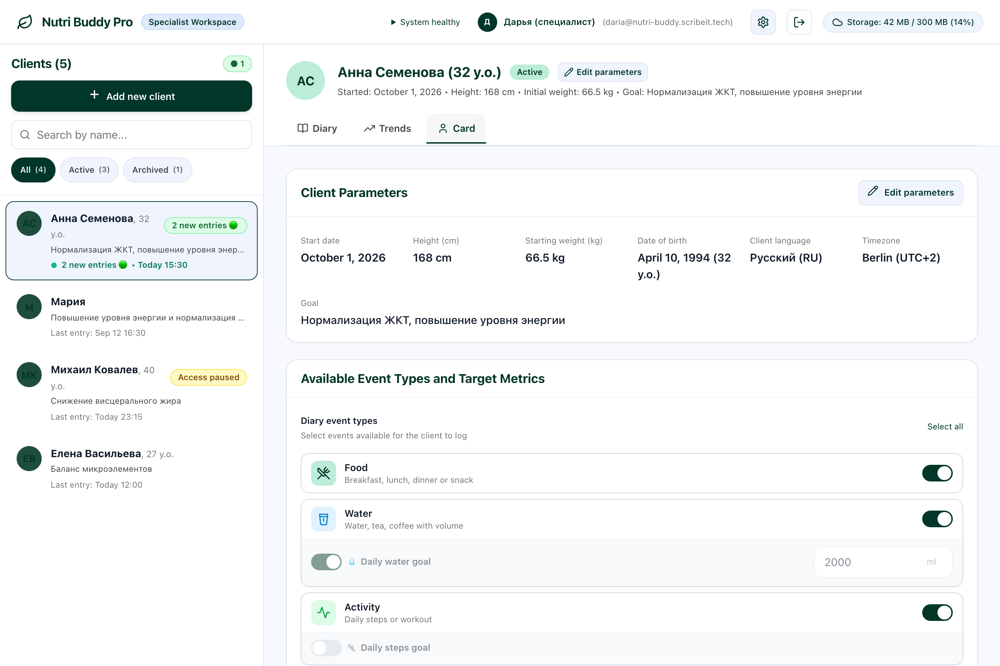

PWA / health diary / roles
Nutri Buddy
Дневник питания и самочувствия для нутрициолога и её клиентов
Клиент ведёт дневник в браузере или PWA, а нутрициолог видит единую структурированную историю, настройки и динамику показателей.

Контекст
Данные о питании, самочувствии и привычках часто приходят фрагментами в мессенджеры, поэтому специалисту приходится вручную собирать историю и оценивать динамику.
Что сделал
Самостоятельно спроектировал и собрал продукт: сценарии двух ролей, UX, React/PWA-интерфейс, модель данных, авторизацию и разграничение доступа, дневник, аналитику и развёртывание.
Результат
Продукт запущен и сейчас пилотируется с нутрициологом и её клиентами.
Выбранные экраны
Локальное демо с синтетическими данными